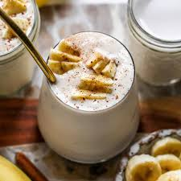

Banana Smoothie
A creamy and refreshing smoothie perfect for breakfast or snacks.
Ingredients
- 2 ripe bananas
- 1 cup milk
- 1/2 cup yogurt
- 1 tbsp honey
- 1/2 tsp vanilla extract
- Ice cubes (optional)
Directions
- Peel and slice bananas.
- Add bananas, milk, yogurt, honey, and vanilla to blender.
- Blend until smooth.
- Add ice cubes if desired and blend again.
- Pour into glasses.
- Serve chilled.
Step 1: Gather Your Ingredients
Prepare to makethe perfect refreshing smoothie! You'll need 2 ripe bananas, 1 cup of milk, 1/2 cup of yogurt, 1 tablespoon of honey, 1/2 teaspoon of vanilla extract, and ice cubes if desired. Ripe bananas with a few brown spots are perfect for sweetness and creaminess!
Step 2: Prepare the Bananas
Peel both bananas and break them into chunks. You can break them directly into your blender or put them on a cutting board and slice them. Breaking them into smaller pieces helps the blender process them more smoothly and faster.
Step 3: Add All Ingredients to Blender
Add your banana pieces, 1 cup of milk, 1/2 cup of yogurt, 1 tablespoon of honey, and 1/2 teaspoon of vanilla extract to your blender. Put the lid on securely—safety first!
Step 4: Blend Until Smooth
Turn on your blender and blend for about 1-2 minutes until everything is smooth and creamy. No chunks of banana should remain. The smoothie should have a nice, pourable consistency. It looks absolutely delicious!
Step 5: Add Ice (Optional)
If you prefer a colder, thicker smoothie, add a handful of ice cubes to the blender and blend again for about 30 seconds. The ice will make it extra refreshing and create a nice texture. Skip this step if you prefer a thinner consistency!
Step 6: Pour and Enjoy
Carefully pour your beautiful banana smoothie into glasses. Take a moment to appreciate the creamy texture and pale yellow color. This healthy, delicious smoothie is perfect for breakfast, a post-workout snack, or any time you want something refreshing. Cheers!